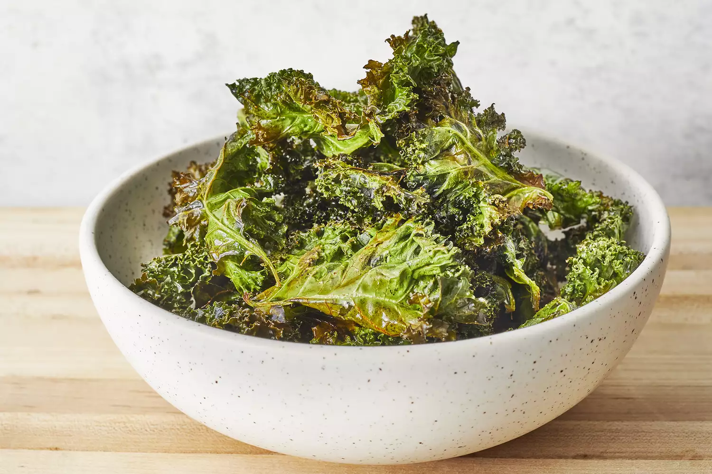

Baked Kale Chips

These crispy oven-baked kale chips are a great homemade snack. You cannot stop at just eating one, just like potato chips. Great for parties, too.
Recipe by LucyDelRey
Prep Time: 10 mins
Cook Time: 20 mins
Total Time 30 mins
Ingredients
- 1 bunch kale
- 1 tablespoon olive oil
- 1 teaspoon flaked sea salt
Directions
- Preheat an oven to 300 degrees F (150 degrees C). Line a rimmed baking sheet with parchment paper.
- With a knife or kitchen shears carefully remove kale leaves from the thick stems and tear into bite size pieces. Wash and thoroughly dry kale with a salad spinner. Drizzle kale leaves with olive oil and toss to combine. Spread out in an even layer on the baking sheet without overlapping and sprinkle with salt.
- Bake until the edges start to brown but are not burnt, 20 to 30 minutes.
Nutrition Facts
Per serving: 58 calories; total fat 3g; saturated fat 0g; sodium 185mg; total carbohydrate 8g; dietary fiber 2g; protein 3g; vitamin c 90mg; calcium 104mg; iron 1mg; potassium 337mg